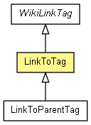

org.apache.wiki.tags
Class LinkToTag
java.lang.Object
 javax.servlet.jsp.tagext.TagSupport
org.apache.wiki.tags.WikiTagBase
org.apache.wiki.tags.WikiLinkTag
org.apache.wiki.tags.LinkToTag
javax.servlet.jsp.tagext.TagSupport
org.apache.wiki.tags.WikiTagBase
org.apache.wiki.tags.WikiLinkTag
org.apache.wiki.tags.LinkToTag
- All Implemented Interfaces:
- Serializable, javax.servlet.jsp.tagext.IterationTag, javax.servlet.jsp.tagext.JspTag, javax.servlet.jsp.tagext.Tag, javax.servlet.jsp.tagext.TryCatchFinally
- Direct Known Subclasses:
- LinkToParentTag
public class LinkToTag
- extends WikiLinkTag

Writes a link to a Wiki page. Body of the link becomes the actual text.
The link is written regardless to whether the page exists or not.
Attributes
- Since:
- 2.0
- See Also:
- Serialized Form
| Fields inherited from class javax.servlet.jsp.tagext.TagSupport |
id, pageContext |
| Fields inherited from interface javax.servlet.jsp.tagext.IterationTag |
EVAL_BODY_AGAIN |
| Fields inherited from interface javax.servlet.jsp.tagext.Tag |
EVAL_BODY_INCLUDE, EVAL_PAGE, SKIP_BODY, SKIP_PAGE |
| Methods inherited from class javax.servlet.jsp.tagext.TagSupport |
doAfterBody, findAncestorWithClass, getId, getParent, getValue, getValues, release, removeValue, setParent, setValue |
| Methods inherited from class java.lang.Object |
clone, equals, finalize, getClass, hashCode, notify, notifyAll, toString, wait, wait, wait |
m_title
public String m_title
m_accesskey
public String m_accesskey
LinkToTag
public LinkToTag()
initTag
public void initTag()
- Description copied from class:
WikiTagBase
- This method is called when the tag is encountered within a new request,
but before the setXXX() methods are called.
The default implementation does nothing.
- Overrides:
initTag in class WikiLinkTag
getVersion
public String getVersion()
setVersion
public void setVersion(String arg)
setTitle
public void setTitle(String title)
setAccesskey
public void setAccesskey(String access)
doWikiStartTag
public int doWikiStartTag()
throws IOException
- Description copied from class:
WikiTagBase
- This method is allowed to do pretty much whatever he wants.
We then catch all mistakes.
- Specified by:
doWikiStartTag in class WikiTagBase
- Throws:
IOException
Copyright © {inceptionYear}-2014 The Apache Software Foundation. All rights reserved.